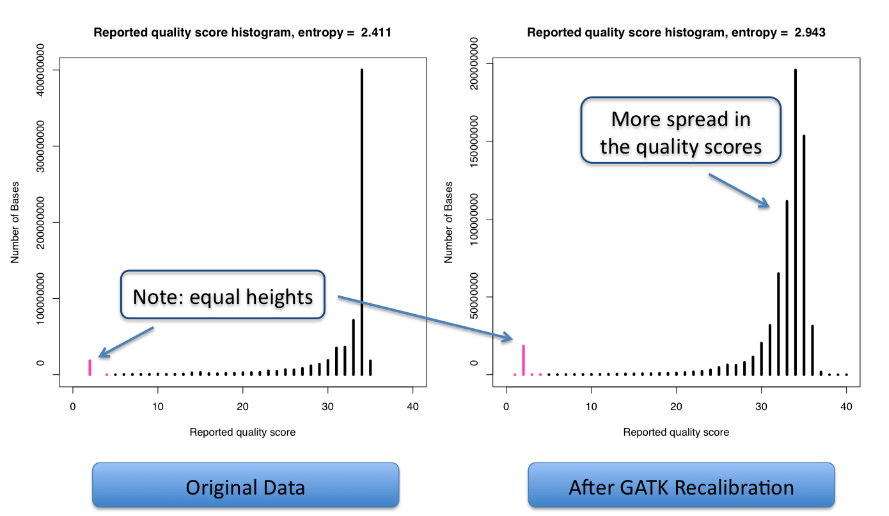
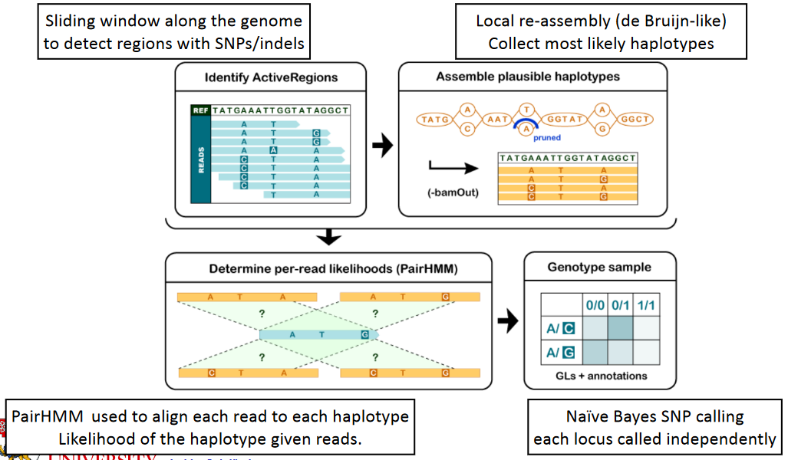
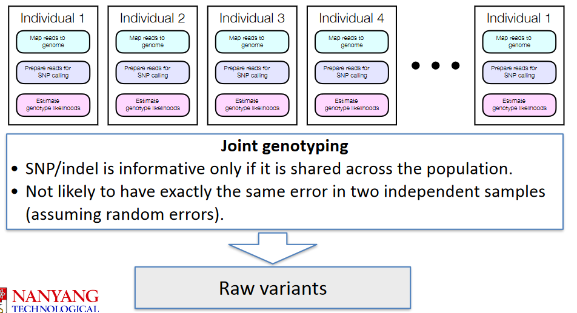
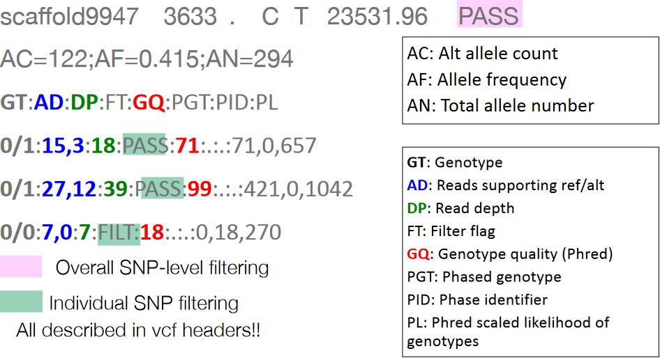

10 Re-Sequencing and SNP Calling
10.1 Re-Sequencing
Re-sequencing is a genomic sequencing approach that involves sequencing new individuals from a species for which there already exists a reference genome. This method allows researchers to identify variations, such as single nucleotide polymorphisms (SNPs) and insertions or deletions (indels), in the genomes of new individuals when compared to the established reference genome.
To align the sequence reads obtained from re-sequencing to the reference genome, read alignment methods are employed. These methods utilize data structures like suffix tries, which efficiently store and retrieve substrings of the reference genome. Examples of popular read alignment tools include Bowtie2 and bwa mem. These tools aid in accurately mapping the sequenced reads to the reference genome, enabling the identification of genetic variations.
In addition to traditional read alignment methods, there are pseudo alignment-based methods like minimap2. Pseudo alignment refers to the rapid mapping of reads to a reference without explicitly aligning each base. Such methods are particularly well-suited for handling long sequencing reads.
10.1.1 Goals and Requirements
One of its primary goals is to unveil patterns and trends in genetic variation, contributing valuable insights into diverse aspects of population genetics and evolutionary biology. By identifying genetic adaptations and regions under natural selection, re-sequencing helps researchers understand how populations adapt to different environments.
Furthermore, this technique provides a means to investigate gene flow between populations, offering crucial information about the connectivity and exchange of genetic material. The analysis of patterns of dispersal, including differences between sexes and historical migration histories, enhances our understanding of the demographic dynamics of populations over time. Moreover, re-sequencing plays a vital role in estimating the effective population size and its historical fluctuations, providing valuable data for unraveling the population’s demographic history.
Beyond evolutionary and population biology, re-sequencing finds applications in forensics, where it is employed for individual identification and genetic profiling. Practical considerations for re-sequencing include a sufficient sample size, typically involving tens of individuals, and an appropriate coverage level, such as 16x. Although not as high as required for de novo genome assembly, this coverage ensures the reliable estimation of genetic differences between individuals and the accurate identification of genetic variations within the studied population.
10.1.2 Sequencing Issues
Re-sequencing, while a powerful technique, encounters challenges, especially in the context of heterozygous positions within diploid genomes. Adequate coverage is essential to sample both alleles at heterozygous positions, ensuring a comprehensive representation of genetic diversity. The probability of correctly sampling one allele is akin to a coin toss, with a 50% chance of sampling either the maternal or paternal allele.
For instance, consider a heterozygous position: with just four reads, the probability of all reads sampling only one allele is 0.125. As coverage increases to eight reads, the probability decreases to 0.0078125, and with 16 reads, it drops significantly to 3.051758e-05. Scaling this challenge to a real-world scenario, such as 10 million SNPs at 16x coverage, the probability of sampling all heterozygous positions with at least one read per allele is remarkably low at 2.9e-133.
Moreover, when the average coverage is low, random variation can lead to larger parts of the genome having lower coverage. This variability across different regions in different individuals results in many sites having missing values, complicating the accurate assessment of genetic diversity.
10.1.3 Single Nucleotide Polymorphisms (i.e., SNPs)
Single Nucleotide Polymorphisms (SNPs) are a central focus in re-sequencing efforts, representing loci where an individual differs from the reference genome at a single nucleotide. The primary goal is to assess point mutations, and the subsequent identification and interpretation of SNPs involve specific procedures and data formats.
In the nomenclature of SNPs, the major allele is the more prevalent variant within a population, while the minor allele is less common. Understanding the evolutionary context of SNPs requires distinguishing between ancestral and derived alleles. The ancestral allele is the original variant present in the common ancestor of a population, a determination that often necessitates information from outgroup species. In contrast, the derived allele is the variant that has mutated from the ancestral state.
Reference alleles are those present in the haploid reference assembly, but it’s crucial to note that the allele in the reference can be any of the major, minor, ancestral, or derived alleles. This ambiguity emphasizes the importance of considering population data and outgroup information to discern the specific nature of the reference allele.
10.2 Broad Institute and NGS Analysis
The Broad Institute has played a pivotal role in genomics research by developing a suite of Java-based software tools tailored for the analysis of resequencing data. Among these tools is the Preprocessing Toolkit, Picard, which has been seamlessly integrated into GATK (Genome Analysis ToolKit) from version 4 onward. Picard serves as a comprehensive preprocessing toolkit, addressing tasks related to data preparation and manipulation to ensure the quality and integrity of sequencing data.
GATK, a key offering from the Broad Institute, specializes in variant analysis, focusing on the identification of genetic variations such as SNPs and indels. Its sophisticated algorithms enhance the accuracy of variant calling, making it a widely utilized tool in genomics research. For the analysis of structural variants, the Broad Institute provides GenomeSTRiP, a dedicated tool that enables the identification and exploration of larger-scale genomic variations, including insertions, deletions, and duplications.
Facilitating the visualization of genomic data, the Integrated Genome Viewer (IGV) is another notable tool developed by the Broad Institute. IGV offers an interactive platform for researchers to explore and analyze various genomic features, including sequence data, variants, and annotations, providing a comprehensive understanding of genomic landscapes.
10.2.1 Read Mapping
Quality control (QC), trimming, and mapping to the genome are crucial steps in the analysis of Next-Generation Sequencing (NGS) data, ensuring the accuracy and reliability of downstream analyses.
For QC, tools like fastQC and fastp are commonly employed to assess the quality of raw sequencing data. These tools provide valuable insights into various quality metrics, aiding researchers in identifying potential issues and making informed decisions for data processing.
Trimming, an essential preprocessing step, is carried out using tools like Trimmomatic or fastp. Trimming helps remove low-quality bases and sequencing adapters, enhancing the overall quality of the data and improving downstream analysis accuracy.
Read alignment, the process of mapping sequenced reads to a reference genome, is typically performed using tools like bwa mem or Bowtie2. While both are popular choices, bwa mem is often preferred in practice. Additionally, pseudo alignment-based methods like minimap2 are gaining popularity, especially for handling long reads. Pseudo alignment allows rapid mapping without explicitly aligning every base, making it suitable for datasets with longer read lengths.
The outcome of the alignment process is typically a file in SAM (Sequence Alignment/Map) format, which is often converted to BAM (Binary Alignment/Map) for more efficient storage and manipulation.
The @HD (Header) line within the SAM header contains vital information about the header itself, including the version number (VN) specifying the SAM format version and the sort order (SO) indicating how alignments are sorted within the file. This ensures clarity and compatibility in handling the data.
The @SQ (Sequence Dictionary) lines in the SAM header define the sequence dictionary, presenting information about the reference sequences or contigs used in the alignment. Each @SQ line provides details such as sequence name, length, and optional attributes. This sequence dictionary establishes the order of sequences in the alignment, facilitating accurate interpretation.
Furthermore, the @RG (Read Group) lines in the SAM header convey information about read groups, allowing the grouping of reads with similar properties. Multiple @RG lines can be present, each specifying details like ID, sample name, library name, and platform information. This read group information is valuable for associating reads from the same sample, library, or sequencing run.
10.2.1.1 SAM Flags
Flags are really just pieces of binary information that tell you more about how the read mapping went. For instance, a binary flag of “1001” would mean that the flag in question is an un-mapped one; a flag of “1001” - on the contrary - would be an unmapped read with multiple sequences.
10.2.1.2 BAM Files
A Binary Mapping File (i.e., BAM) is the same file as a SAM file, but in binary format. BAM files are used because they are smaller and lead to faster results.
BAM/SAM files play a pivotal role in genomics research, encompassing a wealth of information about both mapped and unmapped reads from sequencing data. This dual representation provides a comprehensive view of the alignment status of short DNA sequences to a reference genome, allowing researchers to explore the entirety of the sequencing dataset.
One notable feature of BAM/SAM files is the ability to extract information about reads specific to a particular genomic region of interest. This selective extraction facilitates targeted analyses, enabling researchers to focus on and explore detailed characteristics within specific genomic regions, enhancing the precision and depth of genomic investigations.
In addition to region-specific analyses, BAM/SAM files afford the flexibility to extract either all mapping reads or all unmapped reads separately. This distinction is particularly valuable for researchers conducting diverse analyses, ranging from the exploration of characteristics associated with successfully mapped reads to the investigation of reasons behind read alignment failures.
Furthermore, while BAM/SAM files do not store the original Fastq files directly, they contain the necessary information for the reconstruction of the original Fastq sequences
10.2.2 Prepration for SNP Calling
When reads are initially obtained from a Fastq file, they are in random order, potentially scattered throughout the entire genome. To effectively call single nucleotide polymorphisms (SNPs) or conduct other genomic analyses, it is imperative to organize the reads based on their mapping coordinates.
Sorting the BAM file involves arranging the reads according to their genomic positions. This sorted order facilitates more straightforward and efficient access to specific genomic regions during subsequent analyses. For example, when calling SNPs, having reads in a sorted order allows the algorithm to navigate through the data in a coordinated manner, significantly improving the accuracy and speed of SNP identification.
Indexing, another essential step, involves creating an index file associated with the sorted BAM file. This index file serves as a roadmap, enabling faster searches for specific genomic regions. With an indexed BAM file, the computational tools used in genomics analyses can quickly locate and retrieve relevant information, reducing the computational burden and accelerating the overall analysis process.
10.2.2.1 Adding Read Group Information for BAM File
In genomic data processing, augmenting BAM files with read group information is a valuable step that involves adding metadata associated with individual reads. Read group information encompasses details such as sample identification, library origin, and sequencing run or flowcell information. This additional metadata proves particularly useful in correcting for sequencing artifacts, particularly in the identification and removal of PCR duplicates.
The inclusion of read group information in SAM/BAM files facilitates a more granular understanding of the sequencing data, allowing researchers to distinguish between reads originating from different samples, libraries, or sequencing runs. This level of detail becomes crucial when addressing potential biases introduced during the sequencing process, such as PCR duplicates.
PCR duplicates, arising from the polymerase chain reaction amplification step, can distort downstream analyses if not appropriately handled. By incorporating read group information into the BAM file, researchers gain the ability to identify and mark PCR duplicates based on their distinct metadata. This, in turn, enables more accurate quality control and downstream analyses by mitigating the impact of duplicate reads.
10.2.2.2 Removing Duplicates
In Illumina sequencing, the PCR amplification step can generate duplicate reads, introducing artifacts that artificially inflate the coverage of certain genomic regions. To address this, it is essential to identify and manage these duplicate sequences to ensure the accuracy of downstream analyses.
Marking duplicate sequences involves the addition of information to the BAM file, specifically flagging reads that are likely to be PCR duplicates. This information serves as a crucial indicator during subsequent analyses, allowing researchers to distinguish between genuine biological signals and artifacts introduced by PCR amplification.
It’s important to note that the process of marking duplicates does not automatically remove them from the BAM file; instead, it adds a flag or annotation to identify these duplicates. The decision to actually remove them is typically left to the researcher, contingent upon specific analysis requirements. Removal of duplicates can be carried out by setting a specific command line option during the analysis, ensuring that these artifacts do not unduly influence downstream results.
10.2.3 Estimating Genotype Likelihoods

Base Quality Score Recalibration (BQSR) is a critical step in genomic data analysis, especially when using tools like the Genome Analysis Toolkit (GATK). BQSR is designed to identify and rectify systematic errors introduced by the sequencing machine, enhancing the accuracy of base quality scores associated with individual nucleotides.
During BQSR, the tool examines mapped reads in the dataset and considers various factors to identify systematic errors. These factors include the read group to which the read belongs, the quality score associated with the base, the machine cycle producing the base (position in the read), and the context in which the base is found, including the current base and the preceding base (dinucleotide).
Utilizing this information, BQSR calculates empirical quality scores, quantifying how many errors were detected for each sequence context and position in the read. These calculated error rates are then compared to the expected quality scores associated with the sequencing data. Based on this comparison, BQSR adjusts the quality scores, aiming to correct inaccuracies while preserving the original nucleotide calls in the data. Importantly, the recalibration process focuses on improving the reliability of the quality scores assigned to each base without altering the actual nucleotide sequence calls.
10.2.3.1 Call Variants per Sample

The HaplotypeCaller is a variant calling tool used in genomic data analysis, particularly for identifying both Single Nucleotide Polymorphisms (SNPs) and small insertions or deletions (indels) on a per-sample basis. This tool is characterized by several key features that contribute to its accuracy and versatility.
One notable aspect is its ability to perform local reassembly, a process where it identifies haplotypes, or sets of closely linked genetic variations. This approach allows the HaplotypeCaller to consider the context of the genomic region, providing a more accurate and comprehensive understanding of the variations present. This local reassembly is particularly advantageous in regions with complex variation patterns.
Unlike locus-based variant callers, the HaplotypeCaller’s methodology includes information from multiple reads and can handle situations where reads may be unmapped. This is crucial for maximizing the utility of sequencing data, especially in regions where traditional locus-based callers might face limitations.
Furthermore, the HaplotypeCaller is designed to work with polyploid organisms and pooled samples. Its flexibility in accommodating different genetic scenarios makes it well-suited for analyzing complex genomic data, allowing researchers to confidently call variants in a variety of experimental setups.
10.2.3.1.1 Calculating Genotype Likelihoods
\[\begin{equation} p(b|A) = \begin{cases} \frac{e}{3} &: b \not = A &\text{(wrong call)} \\ 1 - e &: b = A &\text{(correct call)} \end{cases} \end{equation}\]
For each nucleotide (that we’ll call “b”), the likelihood score is based on its phred quality score. This phred quality score is transformed to a likelihood score using the above formula (where \(A\) is the true haplotype).
\[\begin{equation} p(b | G) = p(b | \{A_1, A_2\}) = \frac{1}{2} \cdot p(b|A_1) + \frac{1}{2} \cdot p(b|A_2) \end{equation}\]
In the case where a genotype is said to be a certain diploid kind (i.e., the \(\{A_1, A_2\}\)), the likelihood is pretty much the above.
\[\begin{equation} p(D|G) = \prod_i\left(\frac{p(b_i|A_1) + p(b_i|A_2)}{2}\right) \end{equation}\]
Where we have multiple overlapping reads, a naive Bayes assumption is used (i.e., the reads are different from one another).
10.2.3.2 From Likelihoods to SNPs
In the first step, the sample is processed by itself so that variants can be called.

In the realm of genomic variant calling, *Joint SNP calling**, facilitated by tools like GenotypeGVCFs, represents a collaborative approach that harnesses the strength derived from analyzing multiple samples simultaneously.
The fundamental concept behind joint genotyping is rooted in the idea that a Single Nucleotide Polymorphism (SNP) or insertion/deletion (indel) is most informative when it is shared across the entire population under investigation. The rationale behind this lies in the assumption that errors, particularly random ones, are less likely to occur in exactly the same manner in two independent samples. By jointly considering variants across multiple samples, the approach aims to distinguish true genetic variations from potential errors introduced during sequencing or analysis.
10.2.4 VCF File Format
This is a file that contains meta-information (see above), header information (which is denoted using a single octothorpe “#”), and SNP or indel calls.
10.3 Variant and Hard Filtering
10.3.1 Variant Filtering
Variant filtering is a crucial step in genomic data analysis, aiming to distinguish true genetic variants from potential errors or artifacts introduced during the sequencing and variant calling processes. One sophisticated method for accurate variant filtering is the Variant Quality Score Recalibration (VQSR) method.
VQSR is considered one of the most accurate variant filtering techniques, but it comes with specific requirements. To effectively implement VQSR, a high-quality set of verified variants is needed to train the model. This verified set serves as a reference to teach the algorithm to discern between true variants and artifacts, enhancing the precision of variant calls. However, it’s important to note that VQSR is most applicable to model species, such as humans, where extensive validated variant datasets are available.
In situations involving non-model organisms, where comprehensive verified variant sets may be lacking, an alternative approach is recommended. In such cases, hard filtering based on variant quality scores becomes a practical choice. This involves setting specific quality score thresholds to filter out variants that fall below the desired quality standards. While not as sophisticated as VQSR, hard filtering offers a pragmatic solution for non-model organisms, ensuring that variants meeting certain quality criteria are retained for downstream analyses.
10.3.1.1 Hard Filtering
Hard filtering is a widely utilized method in genomic variant analysis to refine variant datasets by establishing specific criteria for filtering out variants that may signify errors or artifacts. Several common filtering parameters, along with their recommended criteria, contribute to this process.
QualByDepth (QD), often set at a threshold of 2.0, calculates the ratio of variant quality (QUAL) to the unfiltered depth of non-reference samples. This criterion is applied to exclude variants with relatively low quality in relation to the depth of coverage.
FisherStrand (FS), with a recommended threshold of 60.0, assesses strand bias through a Phred-scaled p-value. Variants exhibiting significant strand bias are filtered out, as this may indicate potential artifacts.
RMSMappingQuality (MQ), set at a threshold of 40.0, represents the Root Mean Square of the mapping quality across all reads. Variants with poor mapping quality are filtered out to retain those with high mapping characteristics.
MappingQualityRankSumTest (MQRankSum), with a threshold of -12.5, tests for differences in mapping qualities between reads with reference alleles and those with alternate alleles. Variants with significant differences are filtered out.
ReadPosRankSumTest (ReadPosRankSum), often set at -8.0, evaluates whether the alternate allele is predominantly observed near the ends of reads. Variants with this positional bias are filtered out.
10.3.2 Excluding Filtered SNPs

Following the application of filtering criteria to refine the dataset, the resulting VCF (Variant Call Format) file retains all Single Nucleotide Polymorphisms (SNPs), but their status is modified to indicate whether they passed or failed the applied filters. Specifically, SNPs are marked as either “filtered” or “PASS” based on whether they met the specified criteria during the filtering process.
While these filtered SNPs remain present in the VCF file, users may choose to exclude or remove them from the dataset if desired. Various tools and software in the genomics toolkit provide functionality to extract specific subsets of variants based on their attributes, including their filtering status. By employing such tools, researchers can generate a VCF file that includes only the variants that passed the filtering criteria, omitting those marked as filtered.
10.3.3 Annotating SNPs

SNP annotation is a crucial step in genomic analysis, especially when categorizing SNPs into non-coding, synonymous, or non-synonymous variants. This annotation process helps researchers identify potential causative SNPs and gain insights into their functional implications. One tool commonly used for SNP annotation is SnpEff.
SnpEff serves as a powerful tool for annotating SNPs, providing a comprehensive set of annotations based on genomic information. To utilize SnpEff, researchers need to provide it with specific input files, including the VCF file containing the variant information, the genome sequence in FASTA format, and the genome annotation in GFF3 file format. These files collectively guide SnpEff in accurately annotating the SNPs based on their locations and potential functional impact.
SnpEff offers various annotations for different SNP types, including intergenic, synonymous, and non-synonymous variants. It enhances the VCF file by adding a tag, typically labeled as EFF, to the INFO field. This tag includes information about the SNP type, enabling researchers to easily identify and categorize the variants based on their potential effects.